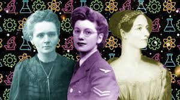

-
Desde os primórdios do contexto social, a divisão de tarefas, marca cultural não biológica, teve papel siginificativo na consolidação de um grupo e sua sobrevivência. Com isso, a participação das mulheres foi igualmente relevante para a tranferência de genes e, por isso, siginificativa para as gerações seguintes. Com a Revolução da Agricultura, acredita-se, de forma unânime, que as mulheres foram responsáveis por esse feito, visto que a prática da caça era mais comum entre humanos machos biológicos, possibilitando que as humanas fêmeas descobrissem esse meio, revolucionando a forma de se estabelecer num lugar. Contudo, como uma forma de dominação de um grupo sobre outro, os homens de determinados grupos, ao entrar em contato com a cultura de outros que compartilhavam da ideia de sobreposição de um sexo sobre o outro, porporcionou o chamado "patriarcado" até os dias atuais. Sendo assim, tal dominação configura-se fora da esfera biológica, mas sim cultural.
-
Com isso, as mulheres foram obrigadas a servir de espécie reprodutiva garantidora da transmissão dos genes masculinos, e, para que essa estrutura social fosse cristalizada, suas atividades foram limitadas à prática reprodutória, pois seu "valor" era oriundo desse feito. Assim, desde moeda de troca à ideia idealizada de companheira, a participação feminina foi, por vezes, confundida como biológica e não cultural. Por fim, surge a religião. Como uma tentativa de explicar o porquê, mas não o como, da origem e finitude da vida humana, também é carregada de características culturais de um grupo, entre eles o patriarcado. Contudo, em muitas culturas, a adoração de divindades femininas foram, após a ascensão do cristianismo, demonizadas, visto que os deuses relacionados à fertilidade, como o deus Baal, na Mesopotâmia, foram utilizadas como forma de controle e, ao mesmo tempo, culpabilização das tragédias ocorridas, como a Peste. Sendo assim, o protagonismo de mulheres com poderes, com excessão da figura de Maria, por ser justamente o padrão de comportamento esperado, como o silêncio, a pureza e a inocência, foram fortemente associadas à bruxaria e ao paganismo. Desse modo, mesmo séculos ou milênios após o surgimento desse tipo de controle social, a secundarização da integração da mulher à esfera pública da sociedade ainda prevalece, principalmente em papéis protagonistas. Em contrapartida, adventos adversos à ordem preestabelecida, como atos "rebeldes" frentes a esse modelo, como a influência de Joana D'arc, Maria Quitéria, Ada Lovelance e Hipátia de Alexandria, foram responsáveis não somente por um choque nesse sistema mas para a revisão de ideias enraizadas sobre sua participação.
-
Conclusivamente, denotamos o papel da participação feminina em ambientes ditos masculinos como um ato de revolução e coragem necessário sempre. Resumidamente, sua integração aos ambitos tecnológios e científicos, bem como em cargos de liderança, é fundamental para que meninas e mulheres participem ativamente do corpo social, endossando o pressuposto legal da igualdade, bem como o pagamento de uma dívida histórica. A seguir, alguns nomes de mulheres fundamentais para o atual progresso científico e social: Ada Lovelace,Mary Kenneth Keller,Grace Hopper,Carol Shaw, Hedy Lamarr, Marie Curie, Florence Nightingale, Gertrude Bell Elion, Mária Telkes, Sônia Guimarães, etc.
-
